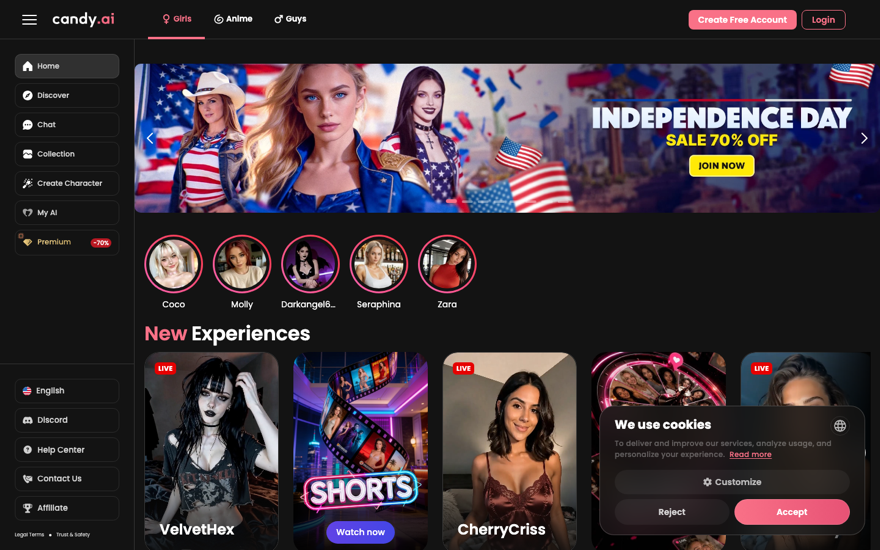
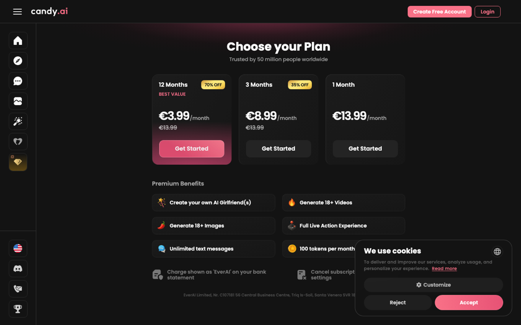
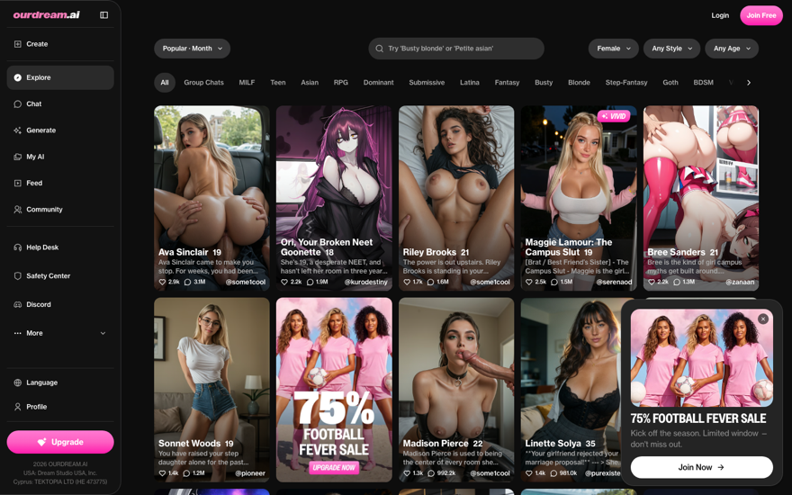
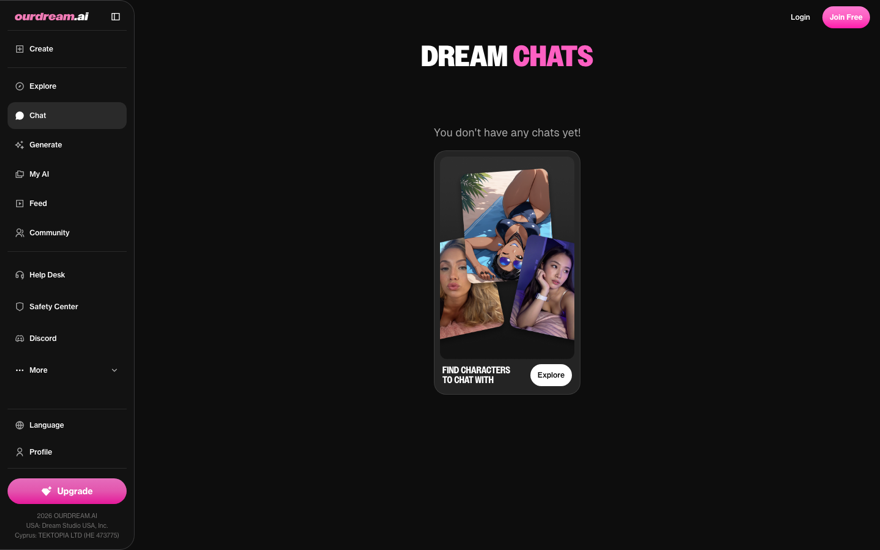
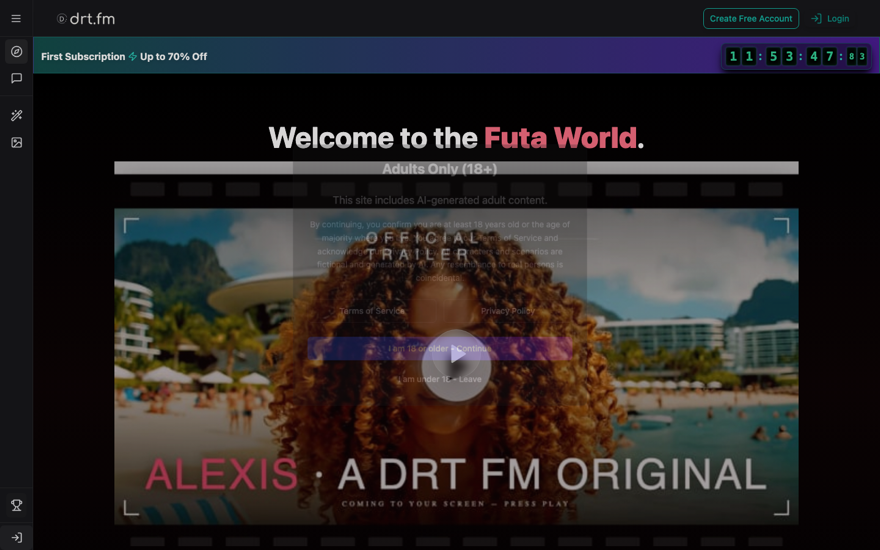

Everything we built on July 11, explained simply: what it is, what it looks like, and exactly how to use it. This page is styled with DRT.FM's new design language — you're looking at the identity right now.
Claude is a great builder and a bad designer — by default it produces the average of the internet: same fonts, purple gradients, everything equally loud. Real designers fix this with three moves, and we installed all three.
Instruction files ("skills") now load automatically whenever Claude designs — taste rules from working designers, your two UX courses boiled down to 110 rules, and hard speed limits. Claude stops guessing.
A reviewer opens the finished page in an invisible browser, screenshots it on phone / tablet / desktop, checks loading speed, and returns a fix list. Claude is a much better critic than creator — it just needs to see its own work.
Never accept the first design. Ask for 3–5 versions, pick the best, iterate on that one. AI is cheap at making options and bad at knowing which is good. Your taste is the final filter — nobody has automated that away.
All of this lives on your Mac and works in every Claude Code chat automatically. Nothing to launch or configure.
| Tool | What it does, simply | How you trigger it |
|---|---|---|
| Taste tutors frontend-design, hallmark, interface-design | Whisper design rules while Claude builds: ban the "AI look", force a real plan before code, keep app screens consistent. | automatic |
| Your courses ux-foundations | The 110 best rules from your Tommy Geoco + Nguyen Le courses (book, PDFs, and all 43 videos). Claude reads them before designing. | automatic |
| Speed police 6 skills from Chrome's team | Enforces the numbers Google ranks you on: page under 1.5MB, fast first paint, no layout jumps. | "audit my site" · "fix Core Web Vitals" |
| Cleanup crew | After building, strips the "this looks AI-made" tells and fixes spacing, contrast, slow animations. | /design-deslop then /baseline-ui |
| The eyes live-design-review agent | Opens your page in a hidden browser, screenshots 3 screen sizes, runs a speed test, returns a fix list sorted by severity. | "run a live design review on localhost:3000" |
| Design detective | Point it at any site you admire — it extracts the design DNA (structure, type pairing, color logic) as reusable rules, without cloning. | hallmark study <URL> |
| The report card | Grades any design against the 10 principles from the famous Refactoring UI book, pass/fail each. | /meta-refactor-ui |
| The brand bible DRTFM-DESIGN.md | DRT.FM's identity file — colors, fonts, mood, component recipes. The one piece that is per-project: copy it into any repo that builds DRT.FM screens. | "read DRTFM-DESIGN.md first" |
From your five answers: quiet luxury · dark-first · rose accent · serif headlines · Alexis-first landing. Everything below is real CSS from the brand bible, not a mockup.
Never pure black. Three surface steps + a hairline do all the depth work. Shadows are reserved for things that truly float (menus, dialogs).
Your site today runs two accents — purple #c084fc and rose. The purple is retired (purple gradients are the #1 "made by AI" tell). The rose stays, refined, and gets an exclusive contract:
Why so strict? Both competitors do exactly this — that's why their pay buttons are impossible to miss. Scarcity is what makes the color work.
Satoshi (clean sans) does all interface work. Instrument Serif — the elegant serif you see in this page's headlines — appears only for big headlines and character names, so it stays special. Two small font files total, where OurDream ships eight (and pays for it in speed).
Three speeds only (120 / 200 / 300ms), one easing curve. No scroll animations, no floating particles, no pulsing dots. Animation exists to give feedback, not to perform.
Page under 1.5MB · scripts under 300KB · loads in under 2.5s · nothing jumps while loading. These are blockers in every design review — because Google ranks on them.
A robot browser measured both sites' actual code (~4,000 elements each). Their polish isn't magic — it's discipline. We copy the discipline, never the look.

Candy.AI — logged-out homepage

Candy.AI — pricing

OurDream — landing grid (the discipline benchmark)

OurDream — "no chats yet" screen

drt.fm as it looks now — good bones: dark, grid landing, Alexis trailer up top
All PDFs, the 603-page book, and 43 transcribed video hours → one playbook (12 topics) + 110 one-line rules that Claude now reads automatically. A few favorites, so you know the flavor:
In the DRT.FM prototype chat: copy DRTFM-DESIGN.md into that repo's root, then say: "Read DRTFM-DESIGN.md fully before building anything." This is the only manual step — everything else loads by itself.
Never say "make it modern and clean" (that's how you get the average). Say what and for whom: "Build the pricing page per DESIGN.md — quiet luxury, one rose CTA, Alexis presence at top." Screenshots of things you like are welcome fuel.
Type /design-deslop — strips the AI fingerprints. For a deeper pass: /baseline-ui, then /fixing-accessibility, then /fixing-motion-performance.
Say: "Run a live design review on http://localhost:3000." You get screenshots at three screen sizes, a speed score, and a fix list sorted Blocker → Nitpick. Fix the blockers, run again.
Unsure between directions? "Give me 4 visual variants of this screen as plain HTML files." Open them, pick one, kill the rest. Then the squint test: one focal point, clear reading order? Ship. When in doubt — remove one thing, don't add.
| hallmark study https://… | extract any admired site's design DNA as rules (no cloning) |
| /meta-refactor-ui | grade a design against the 10 Refactoring UI principles |
| "audit my site" | full quality check: speed, SEO, accessibility, best practices |
| "fix Core Web Vitals" | targeted speed repair on the numbers Google ranks |
| "hallmark redesign this page" | keep the copy and structure, rebuild the look from scratch |
| ~/.claude/skills/ + agents/ | The whole toolbox — works in every Claude chat on this Mac, survives restarts. Inventory with pinned versions: DESIGN-STACK-MANIFEST.md |
| drt-steve/DRTFM-DESIGN.md | The brand bible — copy into any repo building DRT.FM screens |
| drt-steve/claude-design-upgrade-report.html | The research deep-dive (evidence, sources, method rankings) |
| .scratch/design-taste/UX-PLAYBOOK.md | Master course reference, 12 topics (the 110 rules live in the ux-foundations skill) |
| .scratch/design-taste/teardown-screenshots/ | All competitor evidence: screenshots, hover diffs, OurDream's full token dump |
| design-system-guide.html | This page |
Built 2026-07-11 · sources: 52 verified web findings + Kimi social research (17/17 repos confirmed) + measured teardowns of Candy.AI and OurDream + your two UX courses, fully distilled. The serif/sans pairing on this page uses system stand-ins (Georgia); production uses Satoshi + Instrument Serif, self-hosted.